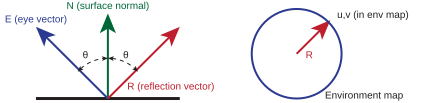

Page 24: Environment Mapping (Reflectance)
On the previous page, we learned about texture maps that surround objects. On that page, we just looked at them. On this page, we’ll use them to fake reflections on objects. This is called Environment Mapping. Since all lighting is basically reflections, environment mapping becomes an important method for faking complex lighting. Sometimes, environment mapping is referred to as reflection mapping.
Environment mapping gives us a way to “fake” some global lighting effects. We still consider one point on one object at a time. However, we can get the color from the environment, which can represent distant objects. We still cannot see reflections of other objects in the scene: we can only see reflections of the environment map.
The key idea of environment mapping is that we use the normal of the surface to figure out what direction the mirror reflection would be coming from, and then use that direction to look up the color in the environment map. Unlike all of the mapping strategies we’ve discussed so far, in environment mapping we don’t use the UV coordinates from the object; instead, we compute the texture coordinates based on the object’s normal and the direction of the camera.
Implementing environment maps is tricky because you have to do the computation of the texture coordinate (which depends on the camera, the object position, and the object normal). Then, you must look up the texture in the environment map. Fortunately, THREE implements this for us! All we have to do is use it.
Environment Map Theory
Remember that with an environment map, we assume the environment is far away. Small changes in position do not matter. Orientation (the direction that we look in) matters a lot. Think about looking at the moon or a distant mountain. If you take ten steps to the left, your perspective of the mountain doesn’t visibly change. The parallax effect is practically zero. Because of this, when a 3D object reflects an environment map, we can completely ignore the object’s physical X,Y,Z position in the world. If you turn your head, however, you see completely different things.
With environment mapping, we make the same assumption: the object is small relative to the environment, so we can assume the entire object is at the center (focal point) of the environment map.
The direction of the reflection is determined by the viewing direction (the vector from the point to the eye) and the normal vector. This is calculated using the same “angle of incidence equals angle of reflection” math we did for specular lighting. This provides a reflectance direction: if light bounced off the point to the eye, we know what direction it must have come from.
The reflected vector can be determined from the eye vector E Sometimes this is written in terms of the incidence vector I, which is the vector from the eye to the point. (the vector from the point to the eye) and the normal vector, . The vectors must be unit vectors.
{kind=link}

The reflection vector (R) is computed using the eye vector (E) and the normal vector (N). R is used to determine the texture coordinates in the environment map.
Given the reflectance direction and the assumption that the object is small relative to the environment (so that the ray starts at the center of the environment map), we can figure out where the ray intersects with the environment map geometry. This determines texture coordinates (u,v on the environment map) from the reflection vector. The actual equation for determining u,v from R depends on the type of environment map.
So, the four key concepts of environment mapping:
- We assume the object is small relative to the environment.
- #1 allows us to ignore positions on the object and just use the direction of reflection.
- We compute the direction of reflection using the eye position, the point position, and the normal vector.
- We use the reflection vector to tell us where in the environment map to look up the color.
Note that assumption #1 means that large objects, especially large flat objects, do not work well with environment map reflections. However, it does mean that small details, even if they are just fake normals, can create differences in directions that lead to interesting reflection patterns.
Filtering (lookup) in an environment map is conceptually the same as filtering for color map lookup. When applying these lookups to real-world materials, we must account for the fact that most surfaces are not perfect mirrors. Microscopic surface roughness causes the reflection vectors to scatter, meaning a rough object doesn’t just reflect a single distinct point; it reflects a blurry cone of light. To render this blurriness, the graphics hardware must filter the environment map by averaging together a much larger lookup area of the texture, similar to how standard minification works. However, applying standard filtering techniques to environment maps introduces significant mathematical challenges. Because these maps are 3D spaces flattened into 2D images, they contain inherent geometric distortions—such as pixels severely bunching up at the poles of a spherical map, or the disjointed boundaries between the six faces of a cubemap. Standard GPU filtering (like mipmapping) assumes a continuous, uniform 2D grid and does not naturally know how to average pixels correctly across these distorted poles or hard cubic seams. Without specialized pre-filtering techniques to handle this non-flat topology, relying on standard averaging causes highly visible pinching artifacts or seam lines to appear inside the object’s blurry reflections.
Using an Environment Map in Three.js
The basic use of an environment is to make a mirrored object. In THREE, this is as simple as using a material that supports Environment Mapping, and using an appropriate texture with it. All of the standard materials support environment mapping - even MeshBasicMaterial.
There are two steps for using an environment map:
- The material must be shiny (reflective). This requires setting the parameters to make it reflect. For
MeshBasicMaterialandMeshPhongMaterial, we set theirreflectivity(which controls the amount of reflectance to blend with the base color,reflectivity=1.0;means 100% reflection). For the physical materials, there is a richer set of properties, but these align with real-world materials. For exampleroughnesscan vary from 0 (smooth and therefore reflective like a mirror) to 1 (rough like a matte surface, no reflection). - The surface needs an environment map. You can specify an
envMapfor each surface. However, you can also specify the environment map as a property of the scene by settingscene.environment. Note:scene.environmentis independent ofscene.background. It often works well to make them the same: you see the same environment that is reflected.
It’s easy, but try practicing by making some reflective objects.
In the example below in 05-24-01.js , put an environment-mapped object into the scene. Pick an object that is appropriate for environment mapping (a primitive like a sphere or torus is fine). Find an environment map, or paint one yourself. Be sure to put the images into the repo!
Note: your object will “reflect” what is in the environment map, not what is in the scene (we’ll deal with this later). That’s OK for this exercise, but it may look silly to have the green ground plane not reflected in the object (so the bottom of the object won’t be green). You can just remove the ground plane (GrWorld has that option). Even better, paint your textures so the bottom has the green in it, so objects look as if they are properly reflecting the ground plane.
You will want to make the background (skybox) be the environment map - otherwise, it will look like the object is reflecting the wrong thing.
view - look at the box and experiment with it
examine - look at the code for the box
edit - change the box's content
rubric - several steps are suggested in the rubric page - form elements on page in rubric
05-24-01.html 05-24-01.js
| Kind
Kind of rubric items: standard - expected from all students advanced - used to get a better grade creative - an opportunity to do something creative optional - not required, but encouraged |
Description | |
| standard | there is a reflective object in the scene that shows the environment map | |
| advanced | explanation of why env map is appropriate | |
| advanced | combine env map with other map types and explain |
You should explain why the object you chose is appropriate for reflection mapping. And give attribution for any textures (like the environment map!).
To get advanced credit, combine environment mapping with other types of maps to make more interesting effects.
Summary: Environment Maps
Environment mapping is the way we use environment maps to fake reflections. It has some limitations: it only reflects objects in the map, and it assumes that the object is small relative to the environment.
Next: Page 25 - Lighting with HDRI